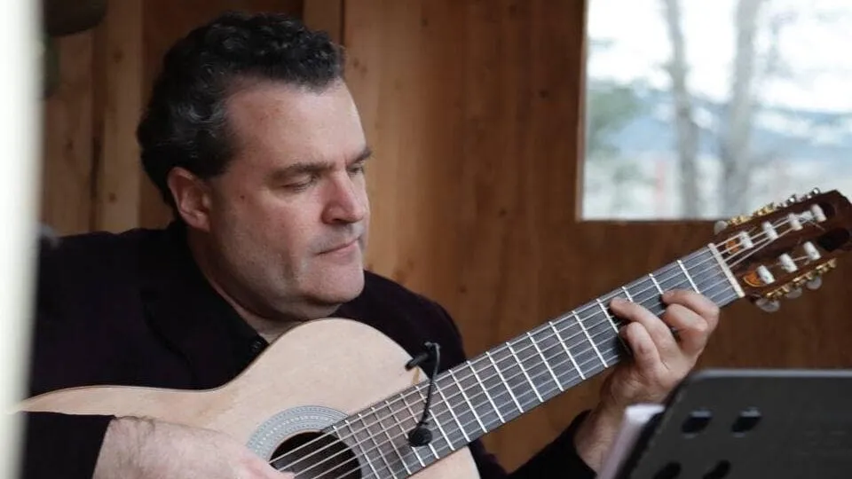

|
 |
Flutist Kristine Rominski is a versatile musician, performing as a soloist, chamber,
and orchestral musician. She currently holds the position of 2nd flute/piccolo with the Seattle Metropolitan Chamber Orchestra.
In addition to classical music, Kristine specializes in playing tango and choro music, performing with the newly formed group
“Cafecito Tango Quartet” (Stuart Zobel, 7-string guitar; Obadiah Wright bandoneón; Benjamin Gifford, bass).
A dedicated music educator, Kristine teaches flute lessons at Illumination Learning Studio and Meter Music School.
She has also worked with organizations like Seattle Music Partners and the Micheal J Owens Music Education Fund to support woodwind programs
in local schools. As a Teaching Artist with the Seattle Chamber Music Society, Kristine coached flute ensembles in middle and high schools.
Kristine has a Master of Music from Carnegie Mellon University studying with Alberto Almarza and Jeanne Baxtresser,
and a Bachelor of Music from the University of Wisconsin-Madison studying with Stephanie Jutt.
Kristine has served as the Membership Chair of the Seattle Flute Society since 2018. Stuart Zobel is a guitarist and composer who specializes in Latin American music. He is a member of Choroloco, a Seattle-based acoustic trio that specializes in Brazilian choro. Stuart plays guitar with several Seattle tango ensembles. He has held several residencies and given numerous workshops at festivals, schools, and colleges throughout the US including the Berkeley Choro Festival, Wintergrass, and the Bellingham Folk Festival. A composer and bandleader for theatrical productions, he has written music for Seattle’s Moisture Festival, Fremont Players, Cirque du Flambé, and Book-It Repertory Theater. He has also composed music for various films, including Threatened a Tribeca Film Festival finalist documentary, and an upcoming dance film of The Odyssey. Stuart teaches guitar, music theory, and composition. For several years he was part of Seattle Symphony’s Soundbridge Music Discovery Center, creating outreach programs focused on music history, as well as leading musical storytelling classes. More recently, he has designed and taught music classes for Path with Art, a non-profit focused on helping people recovering from homelessness and/or addiction. He has also designed a series of classes that used music and movement to teach Spanish. During the pandemic, Stuart has focused on building virtual communities through a variety of live-streamed events including cabaret shows, choro concerts, and virtual tango gatherings, as well as fundraising for Tango-Stride, an organization that uses tango-inspired movement to help people with brain injuries improve their mobility. All of this work is being led from his virtual community space and studio, the “Dagger Moon Barn” Obadiah Díaz Wright I was born in San José, California, to a family of public school teachers. I graduated from Bard College & Conservatory with a B.A. in religious studies, and a B.M. in music composition. After graduating, I participated in Stowe’s Tango Music Festival where I had my first bandoneón lesson and played cello in their orchestra. I now live in Portland, Oregon, with my partner and five cats, playing bandoneón as much as I can. Benjamin Gifford on the Bass |